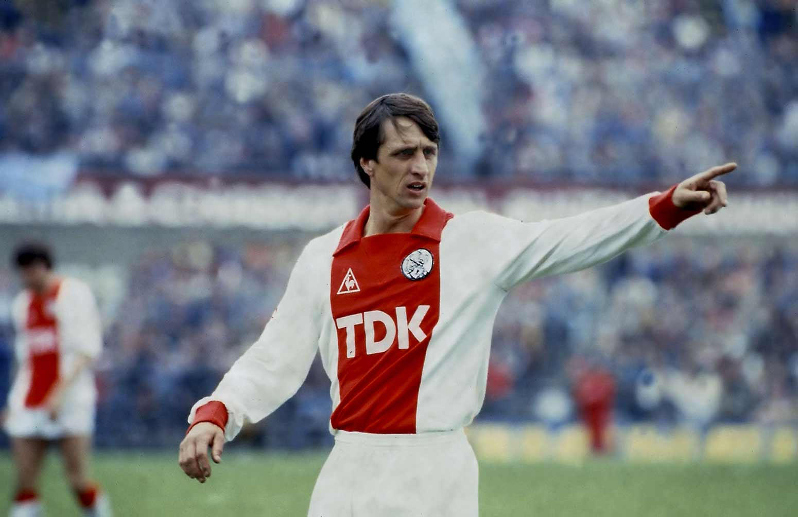
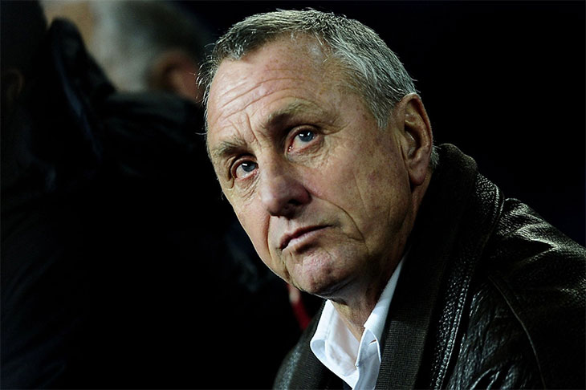

Johan Cruyff debutó en el fútbol de primera división con el Ajax el 15 de noviembre de 1964, a los 17 años. Por entonces era un joven delgado y larguirucho, de mucha elegancia y técnica individual, tan listo en el terreno de juego como fuera de él. Sus cambios de ritmo con el balón pegado a la bota lo hacían inalcanzable para sus marcadores. Dos años después, el Ajax ganó la Liga holandesa, circunstancia que se repetiría en siete ocasiones más. Recibió el Balón de Oro al mejor jugador europeo en los años 1971, 1973 y 1974. La brillantez de su juego y el extraordinario palmarés que ostentaba pese a su juventud despertó el interés de muchos clubes; fue finalmente el F. C. Barcelona el que lo fichó en 1973 por cien millones de pesetas, una cantidad desorbitada en la época. Cruyff llegaba avalado por su trayectoria en el Ajax, con el que había ganado tres Copas de Europa consecutivas con un juego que sorprendía al mundo futbolístico. El 28 de octubre de 1973 debutó con el F. C. Barcelona en la Liga española de fútbol, en un partido contra el Granada. El Barcelona, que había empezado la competición con un juego mediocre, inició ese día una remontada que le llevaría al título; en su camino hacia la Liga destaca una histórica victoria sobre el Real Madrid por 0-5 en el Bernabéu. En las cinco temporadas que jugó con el Barça obtuvo también una Copa de España, y se convirtió en el ídolo de la afición culé. Su aportación a la selección de su país fue decisiva y marcó una época. En 1974, con Cruyff como líder, la selección holandesa (apodada la naranja mecánica por su contundencia y el color de la camiseta) se convirtió en subcampeona del mundo con un juego asombroso. La base de la selección holandesa eran los jugadores y el sistema del Ajax, el famoso fútbol total que el técnico rumano Stefan Kovacs había impuesto al principio de los setenta en el club de Amsterdam. Con una mejor preparación física, presión en todo el campo, intercambio constante de posiciones y un fútbol rápido y ofensivo, la selección naranja arrolló a sus competidores en el Mundial de Alemania. El sistema fue posible gracias a un plantel de grandes jugadores dirigidos por Rinus Michels, entrenador del Barcelona esa misma temporada. Cruyff era el líder de un extraordinario conjunto de talentos como Van Hanegen, Krol, Rijsbergen, Rep y el incombustible Neeskens, fichado también por el Barça nada más acabar el Mundial. El fútbol neerlandés deslumbró a todo el mundo; sólo tenía un defecto: la falta de resolución final ante la portería, que fue, junto con el tradicional espíritu competitivo de los alemanes, lo que impidió derrotar en la final a los anfitriones.
La segunda etapa de Cruyff en el Barcelona la desarrolló como técnico. Fichado por el presidente José Luis Núñez el 4 de mayo de 1988, promovió como entrenador un juego vistoso, basado en la posesión del balón y en el espíritu ofensivo; por la calidad individual y colectiva de sus componentes, así como por su espíritu innovador y sus éxitos deportivos, su equipo sería conocido como el Dream Team y proporcionaría al club una de las etapas más brillantes de la historia. El Barcelona conquistó una Recopa de Europa (1989), una Copa del Rey (1990) y cuatro Ligas consecutivas (1990-1994). En 1992 llegó el título más soñado por los barcelonistas, la Copa de Europa. Igual que en sus tiempos de jugador, Cruyff no dejó en su etapa como técnico que nadie se metiese en su terreno; manejaba incluso la política de fichajes y salarios. la mala gestión del equipo en 1996 movió a la directiva a cesarlo de su cargo. Inmediatamente, Cruyff recurrió la decisión ante los tribunales por considerarla despido improcedente. El enfrentamiento de Cruyff con la directiva azulgrana no se reflejó en la afición, que manifestó siempre su apoyo al ex jugador y ex técnico que tantos títulos había dado a su equipo. De hecho, Cruyff siguió viviendo en Barcelona, consciente de que seguía siendo un mito para los simpatizantes azulgranas. Los partidos de homenaje en el estadio barcelonista en marzo de 1999 registraron una gran asistencia de público. En 2009 recibió el encargo de dirigir la selección de fútbol de la Comunidad Autónoma de Cataluña, y en 2010 fue nombrado Presidente de Honor del Fútbol Club Barcelona.
Pese a sus extraordinarios triunfos, 